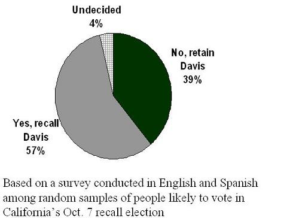

Example: Selection Bias in Politics
Lead Author(s): Jeff Martin, MD
Examples of Selection Bias in Political Studies

1948 Presidential Election
The 1948 preelection surveys used various methods to find subjects and most of these surveys found that the largest % of persons favored Dewey.
- However, as you know, the truth was seen in the general election results where Truman beat Dewey.
Although this was in the field of social science, the errors made in the pre-election polls really turned the entire science of sampling on its head and ushered in an era where we live today where we recognize the importance of representative (or random) sampling.
- Referring to the biased sampling schematic above you can see that this is what we might be observing in the 1948 pre-election survey.
- Those persons who favored Dewey were over-represented in the study sample, the pre-election polls.
California Recall Election of Gov. Davis
(2) California Recall Election of Gov. Davis: As shown below in the 2003 California governor recall election, about a week before the election the San Francisco Chronicle reported that in a sample of 894 persons 57% favored recalling the governor.

A week later the election was held and now we can tell how good our sample was:
- Indeed the sample was very close with just 894 subjects to what was found in the general election of nearly 8.5 million persons:
- 4.7 million yes (55%) and 3.8 million no (45%).
- The sample estimate is very close, within sampling error, of the 55% who later voted yes.
Why Are Election Polls Important?
Why are these election polls such a great way to learn about sampling? Because they are one of the few situations that we actually get the truth about the source population, on election day, and can thus get a handle on whether there was bias in the survey. Unfortunately, we don't get this luxury in clinical research.